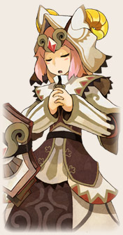
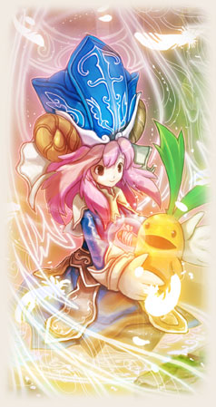
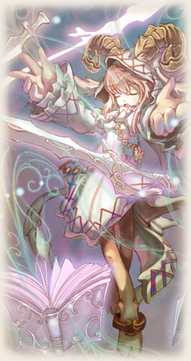

|  | แกะ นักบวชแสงจอมฮีล สุดยอดฮีลเลอร์ที่ขาดไม่ได้ในทีม ใช้เวทรักษาได้ หลากหลายพร้อมทั้งบัฟเพิ่มพลังให้เพื่อนๆ และยังมีสกิลดีบัฟศัตรูอีกสารพัดหาก เพื่อนๆ ชอบการสายซับพอร์ต ก็ควรเลือกเล่นแกะตัวนี้แหละครับ นอกจากนี้หาก เพื่อนๆ เลือกแกะเป็นกองสนับสนุนในทีมของเรา เรายังยืมพลังแกะมาฟื้นคืนพลัง HP ได้ด้วยนะ! |
|||||||||||||||||||
|
||||||||||||||||||||


|  | แกะน้อยนักพยาบาล ที่มีความสามารถในการฮีลขั้นเทพ ยามใดที่มีภัย เธอจะเป็นคนที่เข้ามาช่วยเหลือ และรักษาให้หาย จุดเด่นของ Hierophant อยู่ที่การฮีล ที่สามารถเพิ่ม HP แถมยังมีสกิลที่สามารถรักษาสถานะของ ตัวละครอื่นๆ ได้ เรียกว่าเป็นสายซพพอร์ตเต็มตัวเลยครับ |
|||||||||||||||||||||||||||||
|
||||||||||||||||||||||||||||||


|  | พระผู้บรรลุถึงความเป็นไปในโลก ผู้มีพลังในการร่ายเวทย์ให้สาวกผู้ติดตาม เพิ่มพลังในการต่อสู้ และป้องกันไม่ให้พวกเขาเหล่านั้นเป็นอันตราย Enchanterมีจุดเด่นที่เป็นสายซับพอร์ต แต่ก็ยังสามารถโจมตีได้ด้วย ทีเด็ดอยู่ที่ความสามารถเพิ่มพลังโจมตี และป้องกันได้ด้วย |
|||||||||||||||||||||||||||||
|
||||||||||||||||||||||||||||||